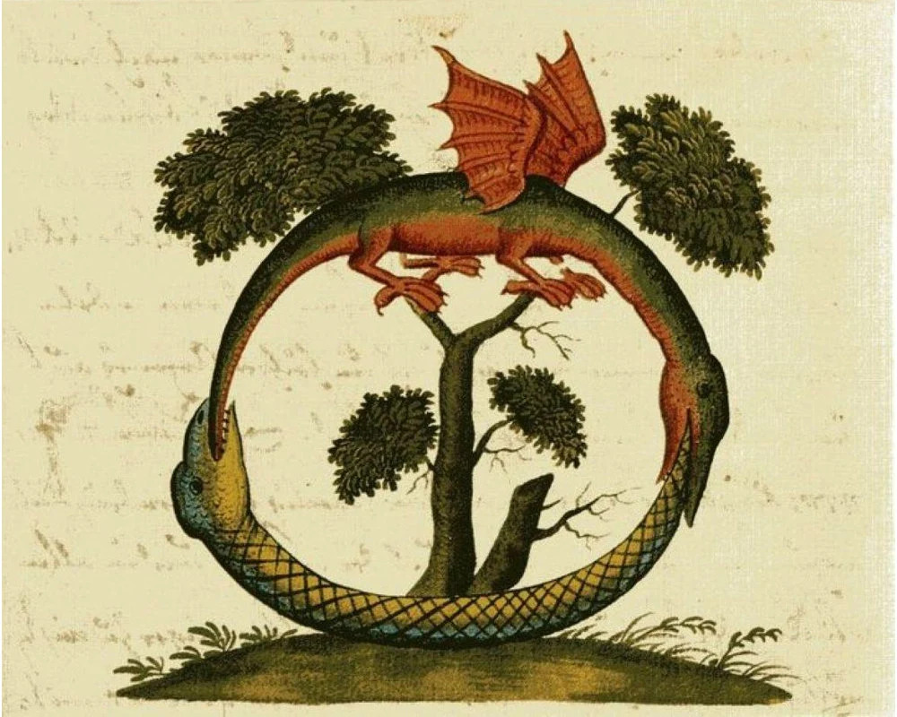

Published: June 9, 2025 • Author: Dominic Grammatico
Eternal Return, or Eternal Recurrence, in its Nietzschean formulation, represents in simple terms what one might argue to be the essence of much of Nietzsche's thought.
The thought experiment more or less posits that time is cyclical, and that all events in one's life will recur infinitely in the exact same sequence. It is an absurd cosmological hypothesis,
but to see it in these terms would miss half of its presentation. It is more so a challenge that Nietzsche puts forth. It is a test of one's affirmation of life. If you could accept,
or even embrace reliving your life ad infinitum, then you most likely have lived a worthy life, or one that is worth loving. Nietzsche uses this confrontation to undermine the essence of religious morality,
especially of those religions which he deems "world-weary". Eternal return rejects the afterlife in favor of an ultimate embrace of the present. Fundamentally, this idea is a call to action, in which Nietzsche urges one to,
as he would say, "Build your cities on the slopes of Vesuvius".

Published: June 12, 2025 • Author: Dominic Grammatico
The aim of Nietzsche's Zarathrustra, and in many ways his larger project, is not just to tear down idols and to conduct a revaluation of values, but to replace
those idols with the ideal of the Overman (Ubermensch). In this sense the overman is not a higher human being, but transcends humanity altogether, and thus could never
actually be achieved. The Overman embraces the will to power, and the striving to overcome oneself. He creates new, life-affirming values as he sheds the
morality of the herd.
The last man, the Letzter-mensch, is the antithesis of the Overman. The last man embodies the current age- he is nihilistic, weary of the world, and seeks not to
expand but to shrink himself, wanting only comfort and decadence. "The opposite of the overman [Übermensch] is the last man: I created him at the same time with that.
Everything superhuman appears to man as illness and madness. You have to be a sea to absorb a dirty stream without getting dirty." This is the dichotomy of the last man and the Overman,
the personified dialectic which appears often in Nietzsche's work.

Published: June 22, 2025 • Author: Dominic Grammatico
The aim of Nietzsche's Zarathrustra, and in many ways his larger project, is not just to tear down idols and to conduct a revaluation of values, but to replace
this with the ideal of the Overman (Ubermensch). In this sense the overman is not a higher human being but transcends humanity altogether, and thus could never
actually be achieved. The overman embraces the will to power, and the striving to overcome oneself. He creates new, life-affirming values as he sheds the
morality of the herd.
The last man, the Letzter mensch, is the antithesis of the overman. The last man embodies the current age, he is nihilistic, weary of the world, and seeks not to
expand but to shrink himself, wanting only comfort and decadence. "The opposite of the overman [Übermensch] is the last man: I created him at the same time with that.
Everything superhuman appears to man as illness and madness. You have to be a sea to absorb a dirty stream without getting dirty." This is the dichotomy of the last man and the overman,
the personified dialectic which appears often in Nietzsche's work.